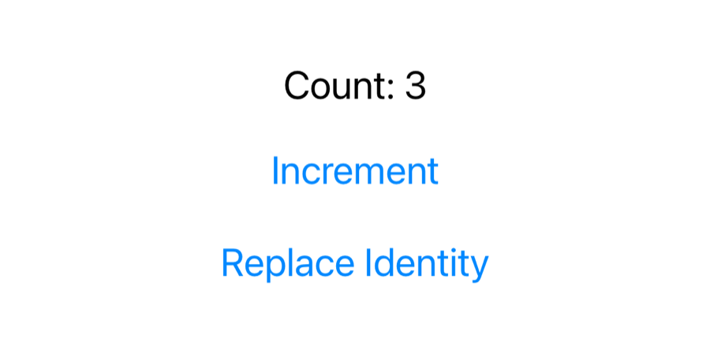
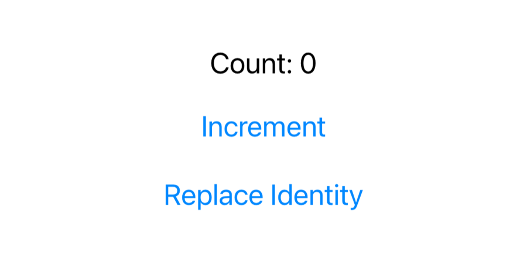

Unit 02 · Lesson 2.8
@State and
Reactive UI
Tap Add Demo ₹1,000 and the balance becomes ₹26,000. Nobody updated a label. Who did?
Lesson 2.8 · Outcomes
By the end, you will be able to explain
Why a plain var in a view won’t compile
What @State is: a property wrapper
Where state lives, and why it survives
How a change becomes a screen update
Who owns state; what $balance is
When state resets: identity
Lesson 2.8 · Where we are
Today: the balance changes
Unit 02 · SwiftUI Fundamentals
@State: a tap changes what is on screen.Part 1
A balance that changes
Hard-coded no more
Part 1 · Our balance cannot change (section 1)
Tap, and the balance should follow
- Tap Add Demo ₹1,000
- The balance updates immediately
- No manual label updates
- The display is derived from state
- A demo: no money moves

Start: ₹25,000

After 3 taps: ₹28,000
Part 2
A normal variable
Predict: does it compile?
Part 2 · Experiment 1: a normal Swift variable (section 2)
It doesn’t compile
struct ContentView: View {
var balance = 25000
var body: some View {
VStack(spacing: 20) {
Text("Balance: ₹\(balance)")
Button("Add ₹1,000") {
balance += 1000
}
}
}
}swiftc, iOS 26.5 SDK, at balance += 1000
bodyis a nonmutating getter- The action can’t change the view’s stored property
var account = Account(…)works:accountis mutable
- A view struct is a description, not a mutable controller
Part 3
@State
One line changes everything
Part 3 · Experiment 2: introduce @State (section 3)
Change a property; the screen follows
struct ContentView: View {
@State private var balance = 25000
var body: some View {
VStack(spacing: 20) {
Text("Balance: ₹\(balance)")
.font(.title)
Button("Add Demo ₹1,000") {
balance += 1000
}
.buttonStyle(.borderedProminent)
}
}
}body: balance = 25000
body: balance = 26000
body: balance = 27000
body: balance = 28000
- No refresh call, no label replaced
- We updated a property; SwiftUI did the rest
Part 3 · What exactly is @State? (section 4)
@State private var balance = 25000
| Part | Meaning |
|---|---|
@State | a SwiftUI property wrapper |
private | only this view can touch it |
var | mutable |
balance | the property name |
25000 | the initial value |
| type | inferred: Int |
- Local mutable state owned by a view
- Takes part in SwiftUI’s update system
balance: Int
_balance: State<Int>
$balance: Binding<Int> (Part 8)
Part 4
Property wrappers
Plain Swift underneath
Part 4 · Property wrapper transformation (section 5)
@NonNegative: a wrapper in plain Swift
@propertyWrapper
struct NonNegative {
private var storage: Int
var wrappedValue: Int {
get { storage }
set { storage = max(0, newValue) }
}
init(wrappedValue: Int) {
storage = max(0, wrappedValue)
}
}
struct Account {
@NonNegative var balance = 25000
}
var account = Account()
account.balance = -500
print(account.balance)0
struct Account { // teaching approximation
private var _balance =
NonNegative(wrappedValue: 25000)
var balance: Int {
get { _balance.wrappedValue }
set { _balance.wrappedValue = newValue }
}
}- Same mechanism:
_balance+ accessors - Plus SwiftUI-managed storage and updates
Part 5
Where state lives
Not in the struct
Part 5 · Where is @State stored? (sections 6, 13)
New view value, same state
struct Survivor: View {
let tick: Int
@State private var balance = 25000
init(tick: Int) {
self.tick = tick
print("Survivor value created (tick \(tick))")
}
var body: some View {
let _ = print("body: tick \(tick), balance = \(balance)")
Button("Add") { balance += 1000 }
}
}- The initial value for this identity
- Not re-assigned when
bodyruns
Survivor value created (tick 0)
body: tick 0, balance = 25000
… Add ×3 …
body: tick 0, balance = 28000
Survivor value created (tick 1)
body: tick 1, balance = 28000
Survivor value created (tick 2)
body: tick 2, balance = 28000
- The struct was created again, twice
- The state stayed at 28000: it lives with the view’s identity
Part 5 · View value vs persistent UI state (section 6) · conceptual
The struct describes; SwiftUI keeps
- SwiftUI may recreate the form template
- The values entered are kept separately
- Not saved to disk
- App terminated: the value is not guaranteed to survive
- Persistence: a later unit
Part 6
From change to screen
UI = f(State)
Part 6 · What happens when balance changes? (section 7) · conceptual
From a tap to a new balance on screen
UI = f(State)
The description is a function of the current state.
Part 6 · Observe body evaluation (sections 8–9, 16)
Ask SwiftUI why body ran
var body: some View {
let _ = Self._printChanges()
return VStack(spacing: 20) {
Text("₹\(balance)")
Button("Add Money") {
balance += 1000
}
}
}- Breakpoint on
balance += 1000 - LLDB:
po balance(when it can evaluate)
ChangesDemo: @self, @identity, _balance changed.
ChangesDemo: _balance changed.
ChangesDemo: _balance changed.
- Init ≠ body ≠ layout ≠ rendering
- Body evaluations aren’t frames drawn
Part 7
State in NPay
One owner, one-way flow
Part 7 · Integrate @State into NPay (sections 10, 12)
Steps A, B, C
struct BalanceCard: View {
let balance: Int
var body: some View {
VStack(alignment: .leading, spacing: 12) {
Text("Available Balance")
.font(.subheadline)
Text(balance,
format: .currency(code: "INR")
.precision(.fractionLength(0)))
.font(.largeTitle.bold())
Text("NPay Demo Account")
.font(.caption)
}
// same modifiers as 2.6
}
}@State private var balance = 25000 // ContentView
BalanceCard(balance: balance)
Button("Add Demo ₹1,000") {
balance += 1000
}
.buttonStyle(.borderedProminent)25000 → ₹25,000
BalanceCard body: 25000 … 26000 … 27000 … 28000
Send tapped
Part 7 · State ownership (sections 11, 17)
The parent owns; children read; actions change
- State → descriptions → screen
- Actions change state, never the card
- The backend owns the real balance
- A local
+= 1000is not a transaction
Part 8
Identity and $balance
When state resets; what $ gives you
Part 8 · When does @State reset? (section 14)
New identity, fresh state
struct IdentityExperiment: View {
@State private var identity = UUID()
var body: some View {
VStack(spacing: 20) {
CounterView() // @State count = 0
.id(identity)
Button("Replace Identity") {
identity = UUID()
}
}
}
}CounterView body: count = 0 … 1 … 2 … 3
CounterView body: count = 0

After 3 increments

After Replace Identity
.id(UUID())created in body- Every evaluation would reset state
Part 8 · What does $balance mean? (section 15)
The value, and a binding to it
balance: Int
$balance: Binding<Int>
- Pass
$balanceto a child - The child edits the parent’s state, no copy
Lesson 2.8 · Recap
What to remember
@State is a wrapper
view-owned state in SwiftUI storage
Identity keeps it
new struct, same state; new id, fresh state
UI = f(State)
change state; SwiftUI updates the screen
Review
Check your understanding
Check your understanding · 1 of 8
What is @State?
- A SwiftUI property wrapper
- A database
- A background thread
_balance printed State<Int>: the wrapper behind the property.
Common trap: Thinking it stores data permanently.
Check your understanding · 2 of 8
Does @State automatically persist across app termination?
It lives in SwiftUI’s in-memory storage for the view’s identity; persistence is a later unit.
Common trap: Confusing “survives updates” with “saved”.
Check your understanding · 3 of 8
Can a view struct be recreated while its @State survives?
Two new Survivor values were created; both saw balance 28000.
Common trap: Thinking the state lives inside the struct.
Check your understanding · 4 of 8
What can happen when a view’s identity changes?
- Its local state may reset
- The entire iOS process must restart
Replace Identity took the counter from 3 back to 0.
Common trap: Expecting state to follow the struct’s type.
Check your understanding · 5 of 8
What does $balance provide for an @State property?
- A
Binding<Int> - A second, independent
Int - A database connection
Printed Binding<Int>: read and write access to the same state.
Common trap: Thinking $ makes a copy.
Check your understanding · 6 of 8
Should a production payment balance be changed only by incrementing local @State?
The backend owns the real balance; a local += 1000 is not a transaction.
Common trap: Treating demo state as the source of truth.
Check your understanding · 7 of 8
The counter shows 3. You tap Replace Identity. What does it show?
- 3
- 0
- 4
A new identity gets new state, starting from its initial value 0.
Common trap: Expecting the count to carry over.
Check your understanding · 8 of 8
From Lesson 2.7: when the balance change makes body run again, does the button’s action run again?
body creates a new closure; only activation runs it.
Common trap: Mixing up evaluation and activation.
Lesson 2.8 · Where this goes next
Where this goes next
| Lesson | Topic | Builds on today |
|---|---|---|
| 2.9 | @Binding: two-way state communication | a balance editor that changes the parent’s state via $balance |
| Later | Networking, ViewModels, persistence | the real, authoritative balance |
Lesson 2.8 · Lab
Make NPay reactive
Predict each result before you run it.
- Experiment 1: a plain
var; read the error. - Experiment 2:
@State; tap three times. - Add
Self._printChanges(); tap; read the console. - Integrate:
BalanceCard(balance:)and the button. - Run
IdentityExperiment: increment, then replace. - Breakpoint on
balance += 1000; trypo balance.
- The compiler error and your one-line explanation
- Console output for three taps
- Before/after screenshots of Replace Identity
Lesson 2.8 complete
@State and
Reactive UI
Next: Lesson 2.9 — @Binding and Two-Way State Communication